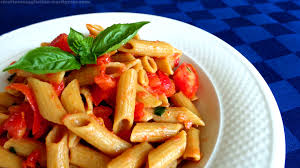

Penne al Pomodoro
Ingredienti
Di seguito riportiamo gli ingredienti per preparare il nostro piatto
Preparazione
- Soffriggere il guanciale tagliato a dadini
- Sbattere le uova con parmiggiano e pepe
- Scollare la pasta e saltarla in padella
- Versare la salsa sulla pasta, saltandola
- Servire il piatto